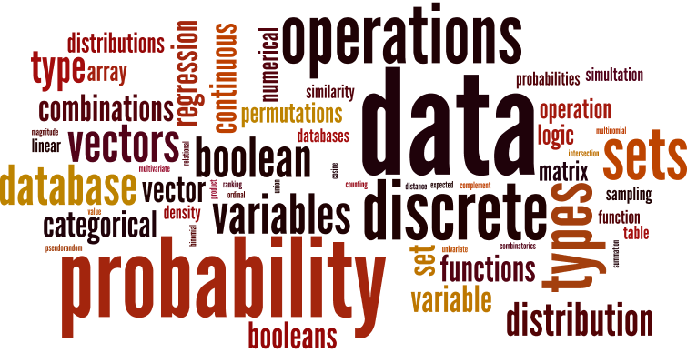

| Instructor: | Prof. Michael Paul | (Office hours: Tuesday/Thursday 1:00-2:15, TLC 266) |
| Canvas: | https://canvas.colorado.edu/courses/26226 (check for announcements, assignments, etc.) |
| Textbook: | Diez, Barr, Çetinkaya-Rundel (2015) OpenIntro Statistics, 3rd Edition. |
| Introduces methods for quantifying and analyzing different types of data, covering foundational concepts in discrete mathematics, probability, and predictive modeling, along with complementary computational skills to apply these concepts to real problems. Covers counting and combinatorics, set theory, introductory probability, common probability distributions, and regression. Requires demonstrated proficiency with introductory computer programming. |  |
| Prerequisites: |
|
To contact the professor outside of class, send email to mpaul@colorado.edu. Please include "2301" in the subject. The professor can also be contacted through Canvas.
Students are expected to complete the assigned readings before coming to class. Quizzes will announced throughout the semester to ensure students keep up with the readings. Readings preceded by “Additional resource” are not required, but are offered as pointers in case they are helpful.
Graded work will take the following forms:
|
Final grade percentages will be weighted according to the distribution to the right. Letter grades will follow a typical scoring distribution (A if >= 93%, A- if >= 90%, B+ if >= 87%, B if >= 83%, B- if >= 80%, C+ if >= 77%, and so on). Do not expect grades to be curved, though exam grades may be curved if needed. We will give you feedback on assignments, quizzes, and exams within 7 days. Grades will be provided through Canvas. |
|
If you qualify for accommodations because of a disability, please submit your accommodation letter from Disability Services to your faculty member in a timely manner so that your needs can be addressed. Disability Services determines accommodations based on documented disabilities in the academic environment. Information on requesting accommodations is located on the Disability Services website. Contact Disability Services at 303-492-8671 or dsinfo@colorado.edu for further assistance. If you have a temporary medical condition or injury, see Temporary Medical Conditions under the Students tab on the Disability Services website and discuss your needs with your professor.
Campus policy regarding religious observances requires that faculty make every effort to deal reasonably and fairly with all students who, because of religious obligations, have conflicts with scheduled exams, assignments, or required attendance. In this class, if you have a conflict due to religious obligations, please notify the instructor at least two weeks in advance of the conflict so that we can arrange accommodations. See the campus policy regarding religious observances for full details.
Students and faculty each have responsibility for maintaining an appropriate learning environment. Those who fail to adhere to such behavioral standards may be subject to discipline. Professional courtesy and sensitivity are especially important with respect to individuals and topics dealing with differences of race, color, culture, religion, creed, politics, veteran's status, sexual orientation, gender, gender identity and gender expression, age, disability, and nationalities. Class rosters are provided to the instructor with the student's legal name. I will gladly honor your request to address you by an alternate name or gender pronoun. Please advise me of this preference early in the semester so that I may make appropriate changes to my records. For more information, see the policies on classroom behavior and the Student Code of Conduct.
The University of Colorado Boulder (CU Boulder) is committed to maintaining a positive learning, working, and living environment. CU Boulder will not tolerate acts of sexual misconduct, discrimination, harassment or related retaliation against or by any employee or student. CU's Sexual Misconduct Policy prohibits sexual assault, sexual exploitation, sexual harassment, intimate partner abuse (dating or domestic violence), stalking or related retaliation. CU Boulder's Discrimination and Harassment Policy prohibits discrimination, harassment or related retaliation based on race, color, national origin, sex, pregnancy, age, disability, creed, religion, sexual orientation, gender identity, gender expression, veteran status, political affiliation or political philosophy. Individuals who believe they have been subject to misconduct under either policy should contact the Office of Institutional Equity and Compliance (OIEC) at 303-492-2127. Information about the OIEC, the above referenced policies, and the campus resources available to assist individuals regarding sexual misconduct, discrimination, harassment or related retaliation can be found at the OIEC website.
All students enrolled in a University of Colorado Boulder course are responsible for knowing and adhering to the academic integrity policy. Violations of the policy may include: plagiarism, cheating, fabrication, lying, bribery, threat, unauthorized access to academic materials, clicker fraud, resubmission, and aiding academic dishonesty. All incidents of academic misconduct will be reported to the Honor Code Council (honor@colorado.edu; 303-735-2273). Students who are found responsible for violating the academic integrity policy will be subject to nonacademic sanctions from the Honor Code Council as well as academic sanctions from the faculty member. Additional information regarding the academic integrity policy can be found at the Honor Code Office website.